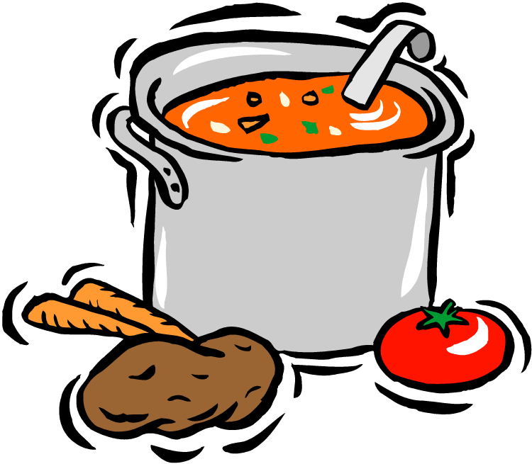

MY WORKING EXPERIENCE
MY WORKING EXPERIENCE
Cashier at Aeon Big Wangsa Maju
During the long semester break in my Diploma days, I took the opportunity to start working part time.
I work at Aeon Big Wangsa Maju for about 6 months which is until my semester break ends.
Working there taught me a lot of new things that I found very important when entering the working field.
I treasure my experience as it not only give me working experience, but also gave me everlasting friends.
Kitchen Assisstant at D'Daun Restaurant

After ending semester 4 of my Bachelor's Degree, I went to work at Southville City, Bangi with my friend.
I found a vacancy at D'Daun Restaurant and work there as a kitchen assisstant.
I work there for a very short period due to having university duties to handle but it was still an experience I can learn from.
I learn the different working process in the food industries which is a bit different in retail.
With these two working experiences I got, I am now a few percent more prepared to face the real working world after graduating my Bachelor's Degree.